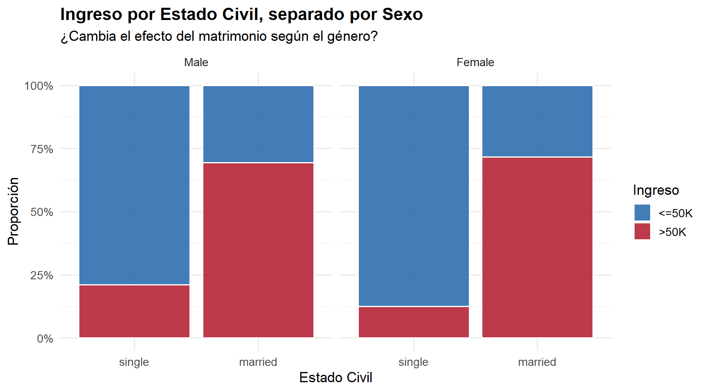
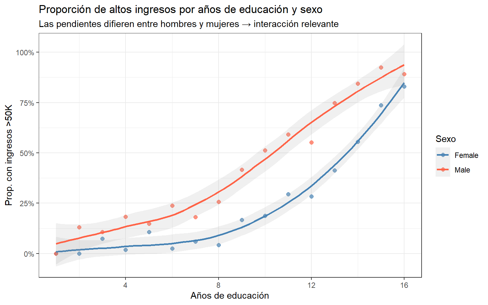

comentarios_TP3
1. Justificación de términos de interacción
A muchos les faltó poner un respaldo visual a la justificación teórica del término de interacción. ¿Cómo se hace esto? Se arma una distribución vibariada para cada categoría de la predicción Y (low/high income) vs variable de X1 y se “facetea” en la variable X2.
Por ejemplo, para ver una interacción entre estado civil y sexo, podemos graficar la distribución de ingresos para cada variable de estado civil (single y married) y facetearla por género.
El respaldo es positivo, si efectivamente las distribuciones son diferentes en cada caso. En este ejemplo, para mujeres solteras hay menor proporción de high income que para los hombres → probablemente sea buena predictora.

Para variables numéricas podemos graficar curvas superpuestas. Esta es una visualización excelente, también ejemplo de un TP.

2. ¿Por qué no aparecen las interacciones en la tabla de AMEs?
El efecto marginal es la derivada de la curva de probabilidad respecto a \(X\), si el término es simple, tenemos que
\[ \frac{\partial P}{\partial X_1} = \beta_1 \cdot P(X) \cdot (1 - P(X)) \]
y el AME es promediar esta cantidad sobre todas las observaciones.
Pero si tenemos dos variables y su término de interacción. Entonces partimos de
\[Z=\beta_0 + \beta_1 X_1 + \beta_2 X_2 + \beta_3 (X_1 X_2)\]
Y sabemos que la probabilidad es \(P(X) = \frac{1}{1 + e^{-Z}}\). Entonces, por la regla de la cadena, la derivada de \(P\) respecto a \(X_1\) no es solo el \(\beta_1\), sino que incluye a \(X_2\) (debido la interacción) multiplicada por la derivada de la función logística:
\[\frac{\partial P}{\partial X_1} = (\beta_1 +\beta_3 X_2)\cdot P(X) \cdot (1-P(X))\]
Al hacer el promedio, el término de interacción es tenido en cuenta dentro del efecto marginal, por lo tanto, el AME de X1 va a diferir del modelo base (la interacción se promedia en todas las observaciones).
Sin embargo, si sólo queremos cuantificar cómo cambia el efecto marginal de \(X_1\) cuando movemos \(X_2\), tenemos que volver a derivar la expresión anterior, esta vez respecto a \(X_2\). Es decir, calculamos \(\frac{\partial^2 P}{\partial X_1 \partial X_2}\). El problema es que si hacemos eso, aparecerán todavía más términos que hacen que el efecto de interacción no sea completamente interpretable como veníamos haciendo.
De hecho, debido a la no linealidad, la cuenta da distinta de cero incluso si no consideramos términos de interacción.
¿Cómo se soluciona? La forma correcta de analizar esto es calculando efectos condicionales (agrupando con el argumento by = variable_interaccion). Como esto quedó fuera del scope del tutorial 10, para evaluar interacciones alcanza con guiarse por los coeficientes (Log-Odds/Odds Ratios) del summary() original.
3. Variables logarítmicas y la regla de la cadena (Semi-elasticidades)
Varios calcularon el AME estándar (dY/dX) para variables a las que les habían aplicado logaritmo (ej. ingreso o capital). Como R no sabe que X es log, a priori, entonces aplica directamente
\[AME=\langle\frac{\partial P}{\partial \ln(X)}\rangle.\]
“En promedio poblacional, un aumento del 1% en el ingreso aumenta la probabilidad del evento en AME puntos porcentuales.”
Si en cambio, tratábamos con un valor lineal,
\[AME=\langle\frac{\partial P}{\partial X}\rangle.\]
“En promedio poblacional, un aumento de 1 unidad en X aumenta la probabilidad del evento en AME*100 puntos porcentuales”.